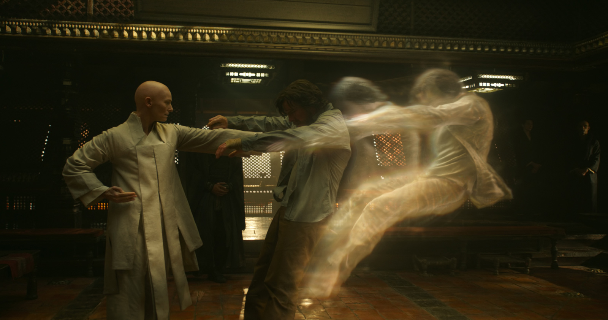

(10 min. read)

Sometimes when I walk into a church it’s like being knocked out of my body. Normal life left behind, I’m out of the mundane world. I have a physical reaction to being here. It reminds me of Doctor Strange when his he gets his soul punched.
Praise God for the feeling of a still church. This wide open space feels unlike any other man-made space. The space is open, but not dry and like a gym. I can hear my footsteps, not acoustically smothered like a theater, but echoing. The space echos not from emptiness, but history. I can feel all the faithful who worshipped here before me, and all the faithful coming after. This isn't dusty, or dirty like a warehouse, this space is ageless. My steps are just one part of this unbroken chain, echoing through time. That’s what the echoes are, not emptiness, but fullness.
And the incense. I can smell the same incense my dad smelled when he was my age. And this dad, and his dad's dad. All brought to prayer by that fragrance. The specific incense formula would change, but not the feeling. Hundreds and hundreds of years Christians have been brought to God by the same smell of incense I am feeling now.

Picture the thurible. The thurible is the vessel that burns the incense. You know what a thurible is, it's the big thing on a long silver chain. If you’ve seen fantasy art of someone covered in smoke, they are probably holding a thurible. At adoration the priest kneels down before God, fills the thurible with incense, and throws the thurible forward to worship God. The thurible swings and billows out clouds. It traces arcs through the air, throwing smoke like an impressionist painter, splashing wildly and erratically. It throws itself to God. It shouts “MORE TO YOU GOD! MORE TO YOU!” It gives more and more of itself. Every swing shouts and exhales. “MORE GLORY TO YOU GOD OF HOSTS! BLESSED ARE YOU!” The thurible's worship is full throated, without restraint, nothing is held back. And when it’s finished it leaves behind its masterwork. Every arc it threw remains, filling the space with a third dimension. The space is deeper, more full. God is enthroned by heavy circling clouds, he is traced by shafts of light caught in the smoke. The image the thurible leaves is striking, not like anything we see in normal life. The view is drawn out of the mundane world into the divine. While the smoke covers and obfuscates, it strangely focuses your gaze.

With the smoke, you see less with your earthly eyes, so you must look deeper. The incense calls to see beyond the surface. Christ says "Cast out into deep water." Let your nets down deeper. There’s a strong surging current underneath the mundane. Let down your nets and feel this pull, strong and powerful. Your nets will feel near tearing with the power felt under the surface.
The thurible is passionate, artful. Some of the greatest christian art ever produced is the temporary smoke of a thurible. It’s transporting. Its performance is lively and meaningful, deep and ancient. You see how God has been found inside incense since before Christianity. Ancient Judaism threw incense to find God, as did ancient pagan religions. Incense has always had the power to bring humans to a place where they seek and grasp for that eternal divinity.


Many modern churches have opted to replace the ancient thurible with the modern smoke machine. They think they can replace the pathos, the romance, the history with the plastic, the unfeeling, the mechanical smoke machine. The thurible is human, giving of itself via the swings of a priest. This clockwork automaton could never replace the sublime worship of a thurible. Do they believe that C3H8O2 can replace incense? Remember the Tower of Babel? Humans in their vainglory try to reach heaven with man-made machinery. Incense was given and ordained by God himself for worship. Who are you lowly humans to use your glycerine golem?

The book of Daniel gives us verses praising God by reciting everything that gives him glory.
All you winds, bless the Lord,
Fire and heat, bless the Lord,
Cold and chill, bless the Lord,
Mountains and hills, bless the Lord,
Seas and rivers, bless the Lord,
All you water creatures, bless the Lord,
All you birds of the air, bless the Lord,
All you beasts, wild and tame, bless the Lord,
The natural world was created by God to be perfect. Nature, without the compromising force of humanity’s sinfulness, is our example of what perfect worship looks like. A deer drinks from a stream, scambers into the woods. A fish nibbles algae from a rock, and swims along. Wind blows and leaves fall from trees. Wolves howl in the night. They repeat their routine, and in doing so God is honored.
Churches are designed to emulate nature. Tall columns like trees, the open space doesn’t feel like a building, but a field. Open, tall, spacious, not for utility, but for beauty. On the walls we carve facades with spiraling vines and natural curves. Not the hard right angles of civilization, but the flowing and sometimes thorny edges of a woods. The walls resemble flowers in bloom more than concrete. Try walking through a city, and on your walk enter a church. The church feels nothing like the city.
Humans are able to build churches because we are creative. Humanity’s creativity exists in a much more powerful form than any animal. In Genesis, God created the world and called it “good.” When he made humanity in his own image though, he called it “very good” Our creativity means we can build new things. We made civilization, we made churches, and we filled those churches with art resembling nature. Look at the high vaulted ceiling like the sky, the tall columns like trees, a large circular rose window like the sun. And reader. You know what? You know what also reminds me of nature? The humble smoke machine. When a deer worships God it doesn’t take center stage like the diva of a thurible. The thurible’s performance is beautiful, but it acts like Prima-Donna. The thurible would never stay un-noticed in the background like a smoke machine will.
Now you see where I've been going with all this. Did I trick you with that brutal takedown of smoke machines earlier? I’m kinda proud of that one. I like both the smoke machine and the thurible, but they feel different. One is passionate, the other is a humble background figure. It’s great that humanity can use its creativity to worship God in new ways. The smoke machine doesn’t have the history of the thurible, but it serves its own unique role the thurible never could, to exist unseen in the background, simply doing its role. It lacks the ambition and passion of the thurible, but it serves its own purpose. Strangely, the smoke machine’s role feels more natural. It feels more like the deer walking through the forest, more like the fish laying a nest of eggs, more like the rustling of trees in the wind.